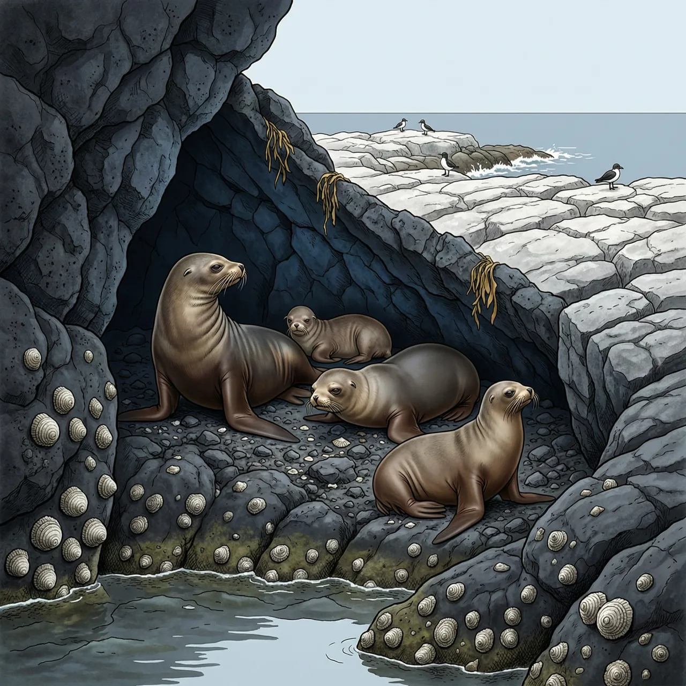
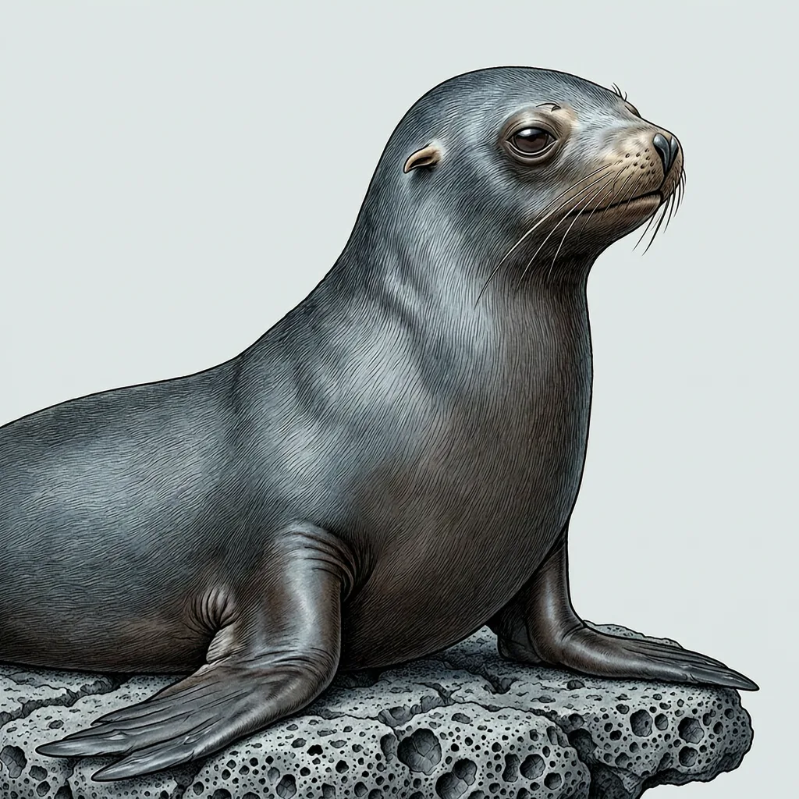

赤道毛皮海狮是海狮科里唯一分布到赤道附近的物种，主要分布在厄瓜多尔以西太平洋上的加拉帕戈斯群岛。别的海狮、海狗多在温带和寒带海域活动，它却常年留在热带，靠的是群岛附近的深层冷水上涌；为避开高温，它体型偏小，上岸后躲在背阴的岩缝里。
加拉帕戈斯群岛的岩岸上，赤道毛皮海狮把一天切成两段：凉快的时段下海，正午最热的时候上岸找阴影。它的分布区只有厄瓜多尔以西太平洋上的这一串群岛，位置正压在赤道附近。海狮、海狗这类动物多半分布在温带和寒带海域，赤道毛皮海狮是个例外。它没能挑走更冷的水，倒是群岛附近的深层冷水上涌把低温海水带到海面，替它在热带留住了一块可住的栖息地。
对赤道毛皮海狮来说，热是绕不开的难题。它体型偏小，在毛皮海狮里算小个子，体表面积相对大一些，散热不吃亏。行为上的办法是躲：正午暴晒时，赤道毛皮海狮很少趴在开阔的岸滩上，而是挤进岩缝、石洞的阴影和背风的凹陷处，让岩石替自己挡住阳光。下海泡一阵再上来，也能多撑一会儿。一天的活动节奏基本由温度决定，而不是由上岸的数量或季节决定。
最容易误会的一点是：赤道毛皮海狮并不是学会了耐受高温，而是被一股冷水留在了赤道上。冷水上涌只覆盖群岛附近这一片海域，而赤道毛皮海狮的分布区也只有加拉帕戈斯群岛这一串岛屿；水温和鱼情一变，它没有第二个群岛可去。它的 IUCN 红色名录等级是濒危，一个把全部范围压在半打岛屿上的物种，能挪动的余地本来就小。
